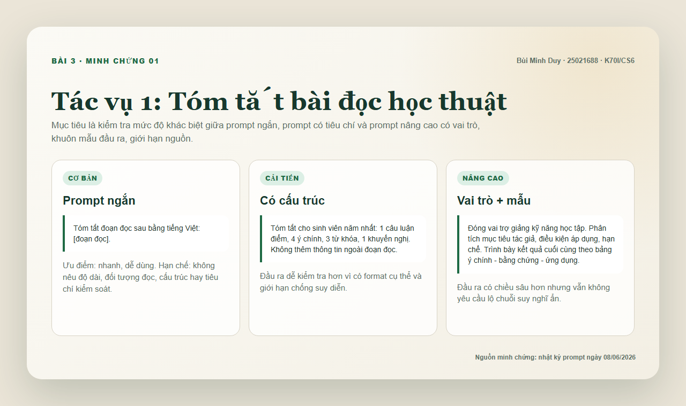
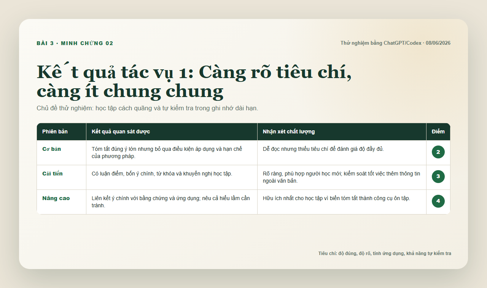
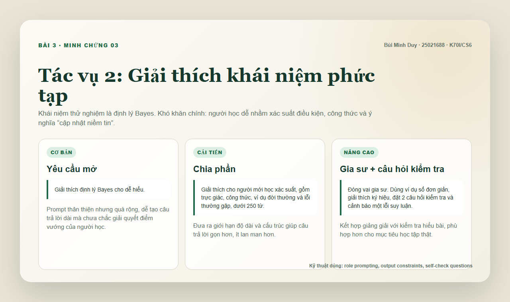
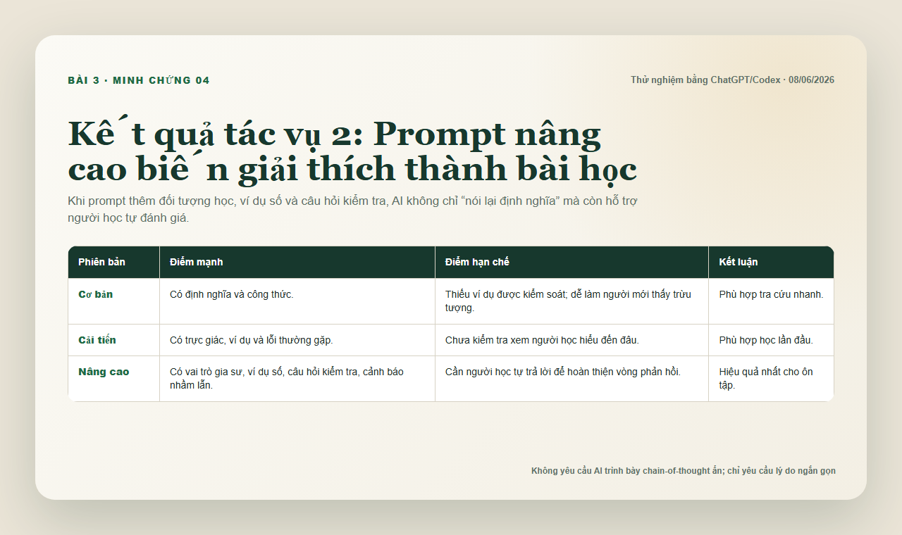
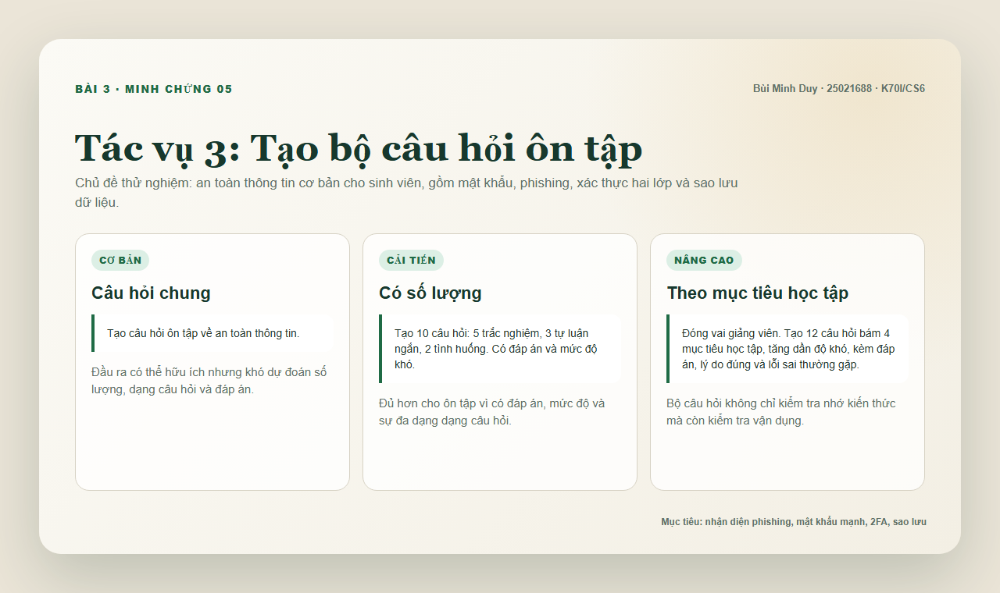
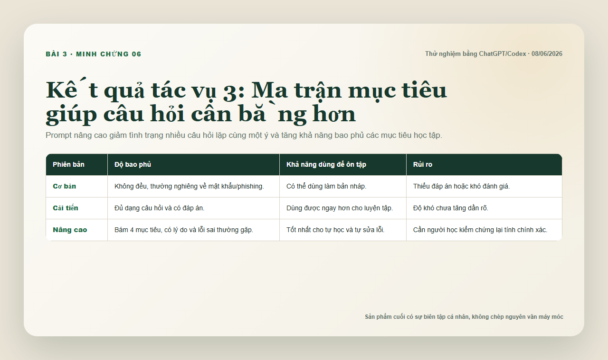
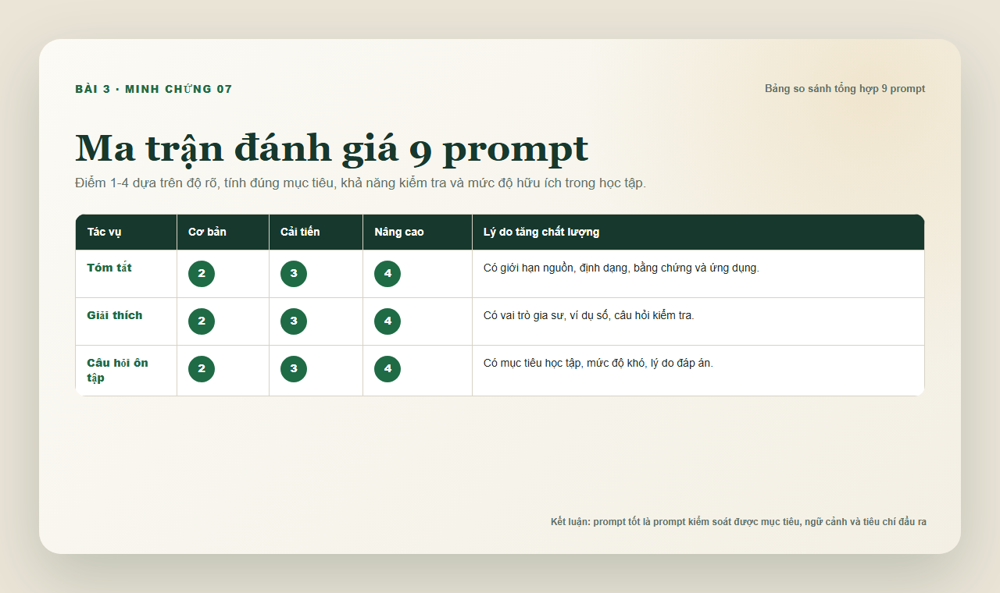
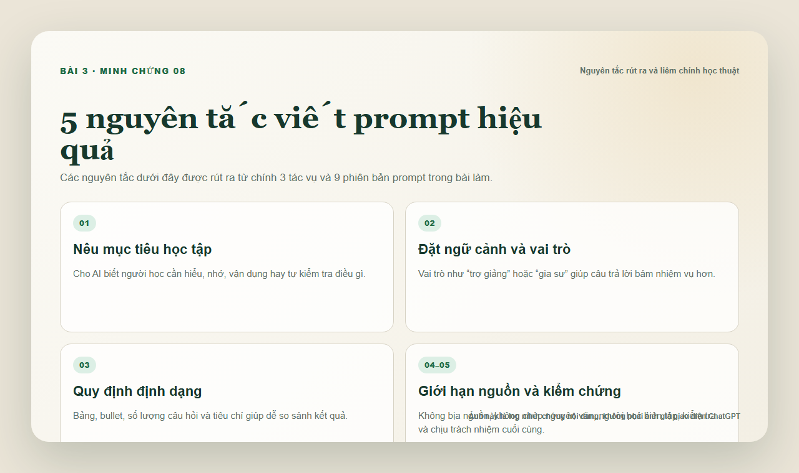

3 tác vụ học tập
Tóm tắt tài liệu, giải thích định lý Bayes và tạo câu hỏi ôn tập an toàn thông tin.
Bài tập 3 · Portfolio cá nhân
Thử nghiệm 9 phiên bản prompt cho 3 tác vụ học tập phổ biến: tóm tắt tài liệu học thuật, giải thích khái niệm phức tạp và tạo bộ câu hỏi ôn tập. Kết quả được so sánh, phân tích và rút ra nguyên tắc viết prompt có trách nhiệm.
01 / Tổng quan
Bài làm có đủ 3 tác vụ học tập, 9 prompt theo ba mức độ, bảng so sánh kết quả, 8 ảnh minh chứng và báo cáo PDF/Word 4 trang.
Tóm tắt tài liệu, giải thích định lý Bayes và tạo câu hỏi ôn tập an toàn thông tin.
Mỗi tác vụ có prompt cơ bản, cải tiến và nâng cao với kỹ thuật prompt engineering rõ ràng.
Đánh giá độ rõ, độ đúng, tính ứng dụng và khả năng tự kiểm tra của từng mức prompt.
PDF/DOCX có phân tích hiệu quả prompt, nguyên tắc rút ra và ghi chú liêm chính học thuật.
02 / Bảng prompt
“Prompt tốt không chỉ hỏi AI làm gì, mà còn nói rõ học để làm gì, trình bày ra sao, giới hạn ở đâu và kiểm tra bằng tiêu chí nào.”
03 / Minh chứng thử nghiệm
Các ảnh dưới đây là log minh chứng từ nội dung thử nghiệm, không phải ảnh giả giao diện ChatGPT. Nếu giảng viên yêu cầu ảnh màn hình UI thật, có thể chạy lại prompt và thay ảnh tại cùng vị trí.








04 / Phân tích
Prompt nâng cao nói rõ người học cần hiểu, nhớ, vận dụng hay tự kiểm tra điều gì, nên câu trả lời ít lệch hướng.
Vai trò như trợ giảng, gia sư hoặc giảng viên giúp AI chọn cách diễn đạt phù hợp hơn với nhiệm vụ học tập.
Khuôn mẫu bảng, số lượng câu hỏi, đáp án và lỗi thường gặp giúp người học kiểm tra chất lượng đầu ra.
06 / Liêm chính học thuật
Nội dung Bài 3 được viết mới dựa trên rubric và thử nghiệm prompt ngày 08/06/2026. AI được dùng như công cụ hỗ trợ tạo, so sánh và trình bày kết quả; phần chọn tác vụ, biên tập, phân tích và chịu trách nhiệm cuối cùng thuộc về người học.
Phần rà trùng lặp được thực hiện thủ công trên các cụm câu đại diện và không phát hiện dấu hiệu sao chép nguyên văn. Đây không phải báo cáo Turnitin và không thể bảo đảm tuyệt đối 0%, nhưng bài làm tránh bịa nguồn, tránh ảnh giả và ghi rõ giới hạn minh chứng.